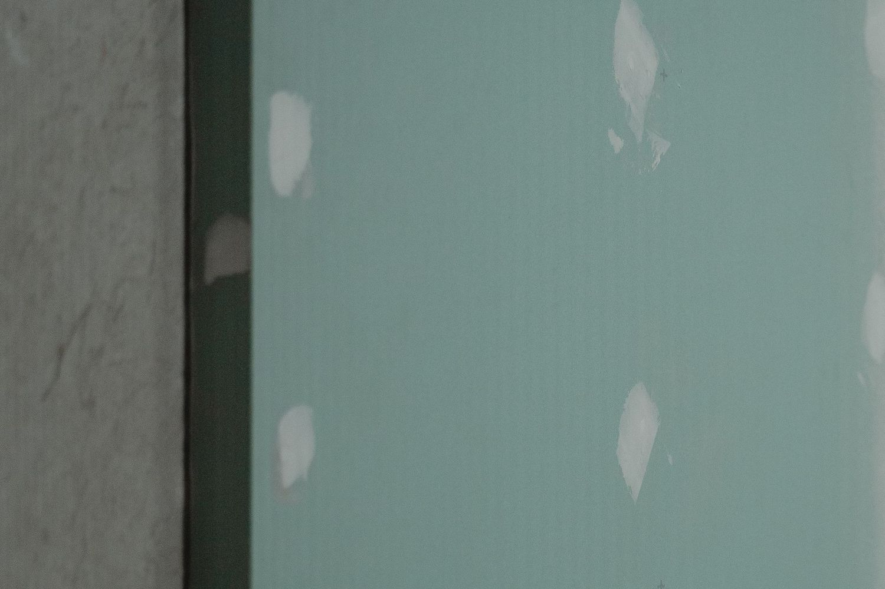

Ceny za metr nie ma na tej stronie. Bez obejrzenia obiektu byłaby to liczba, z którą nikt nic nie zrobi - ani Ty, ani ja.
Mówisz, co za obiekt, jaki metraż i na kiedy. Umawiamy oględziny.
Oglądam budowę i dopiero wtedy powstaje kosztorys na konkretny zakres.
Po robocie mierzymy fizycznie, ile czego zostało zrobione. Faktura idzie z tego obmiaru.

Pełny kosztorys dużej budowy to praca na dni, nie na godziny. Robimy go wtedy, kiedy wiadomo, co realnie jest do zrobienia: jaki jest stan podłoża, jaka wysokość pomieszczeń i w jakim standardzie ma być wykończenie.
oględziny obiektu · kosztorys na konkretny zakres
Na końcu mierzymy fizycznie, ile czego zostało zrobione, i na tej podstawie wystawiam fakturę. Rozliczasz zakres, który powstał na budowie, a nie ten, który ktoś założył przed wejściem ekipy.
obmiar po robocie · faktura na koniec
| Pozycja | Co za tym idzie na budowie |
|---|---|
| Stan podłoża | ile poprawiania trzeba przed gładzią |
| Metraż i wysokość pomieszczeń | dostęp, rusztowania i tempo pracy |
| Materiał | daje go inwestor czy bierzemy nasz |
| Standard wykończenia | zwykły czy podwyższony |
| Praca w czynnym obiekcie | etapowanie robót i godziny wejścia |
| Harmonogram | termin i kolejność robót |
Nie. To ta sama masa i ta sama obróbka na końcu - szlifowanie i przygotowanie pod malowanie wygląda tak samo. Natrysk zmienia tempo nakładania, a przy dużych powierzchniach to tempo decyduje o terminie całej budowy.
Tak, to nasza podstawowa robota. Wchodzimy po hydrauliku, po posadzkach i po elektryku, na gotowy harmonogram generalnego wykonawcy albo dewelopera.
Termin ustalamy telefonicznie, pod konkretny harmonogram. Za konkretnym fachowcem trzeba poczekać - rzadko się zdarza, żeby ktoś wchodził z marszu.
Zadzwoń i umówimy oględziny. Telefon odbieram osobiście.
Dla dewelopera →